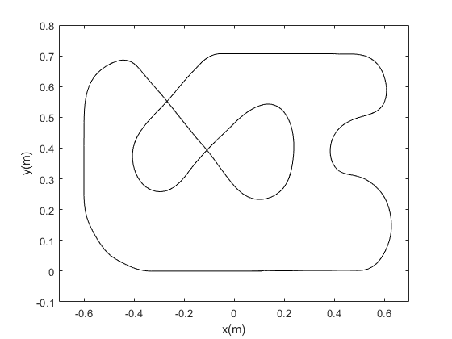
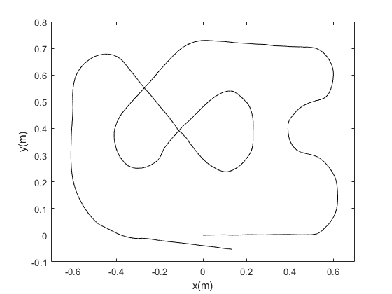

Contents
close all % clear all clc % systemIdentification % sisotool
Dados do robô
Ts = 1e-3; r = 16e-3; % Raio da roda l = 69e-3; % Distância do centro do robô até o centro das rodas s = tf('s');
Controlador de velocidade dos motores
Modelo do motor com roda Km = 455.5;
Km = 460; Pm = 12.97; Modelo = Km/(s + Pm); % Parâmetros do controlador ts_m = 0.15; %tempo de assentamento KPm = 4/(Km*ts_m); KIm = Pm*KPm; Controlador = KPm*(s+KIm/KPm)/s; Tm = feedback(Modelo*Controlador, 1);
Controlador Kanayama
Referência de velocidades
v_r = 1.5; w_r = 0; Qr = [v_r; w_r]; % determinação das constantes % Kx Ts_x = 0.05; Kx = 4/Ts_x; % Ky e Kteta Ts_y_teta = 0.1; qsi = 1; wn = 4/(qsi*Ts_y_teta); Tp = pi/(wn*sqrt(1-qsi^2)); Ky = (wn/v_r)^2; Kteta = 2*qsi*sqrt(Ky); % Kteta = 2*sqrt(Ky);
Mapa da pista
mapa = load('mapa1.txt'); n = 200; m = 100; x_r = mapa(:,1); y_r = mapa(:,2); for i = length(y_r)/2:length(y_r) if y_r(i) < 0 y_r(i) = 0; end end for i = 1:length(y_r) if y_r(i) > 0.707 y_r(i) = 0.707; end end for i = 1:length(x_r) if x_r(i) < -0.6 x_r(i) = -0.6; end end x_r = filter(ones(1,n), n, x_r); y_r = filter(ones(1,n), n, y_r); teta_r = filter(ones(1,n), n, mapa(:,3)*2*pi/180); x_pista = filter(ones(1,m), m, mapa(:,4)); y_pista = filter(ones(1,m), m, mapa(:,5)); teta_pista = zeros(length(x_pista),1); for i=1:length(x_pista)-1 teta_pista(i) = atan2((y_r(i+1)-y_r(i)),(x_r(i+1)-x_r(i))); end t = 0:Ts/2:((length(x_r)-1)*Ts/2); %mapa_pista = [x_r y_r teta_pista]; mapa_pista = [t' x_r y_r teta_pista]; mapa_pista_artigo = [x_r y_r unwrap(teta_pista)]; % figure % subplot(2,1,1) % plot(x_r,y_r,'w') % set(gca,'Color','k') % xlabel('x(m)'); % ylabel('y(m)'); % axis([-0.7 0.7 -0.1 0.8]); % subplot(2,1,2) % plot(x_pista,y_pista,'w') % set(gca,'Color','k') % xlabel('x(m)'); % ylabel('y(m)'); % axis([-0.7 0.7 -0.1 0.8]); figure plot(x_r,y_r,'w') set(gca,'Color','k') xlabel('x(m)'); ylabel('y(m)'); axis([-0.7 0.7 -0.1 0.8]); figure plot(x_pista,y_pista,'w') set(gca,'Color','k') xlabel('x(m)'); ylabel('y(m)'); axis([-0.7 0.7 -0.1 0.8]); 
plots
figure plot(ref_artigo(:,1),ref_artigo(:,2),'w') hold on plot(artigo(:,1),artigo(:,2),'r') legend('referência','trajetória simulada') set(gca,'Color','k') xlabel('x(m)'); ylabel('y(m)'); axis([-0.7 0.7 -0.1 0.9]);
figure plot(x_r,y_r,'w') hold on plot(kanayama(:,1),kanayama(:,2),'r') legend('referência','trajetória simulada') set(gca,'Color','k') xlabel('x(m)'); ylabel('y(m)'); axis([-0.7 0.7 -0.1 0.9]); legend('Pista','Trajetória Kanayama');